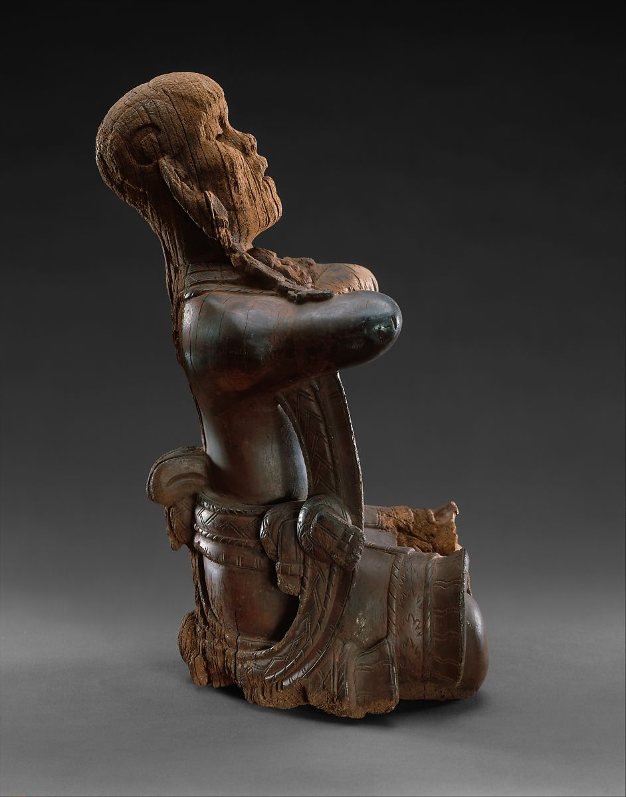
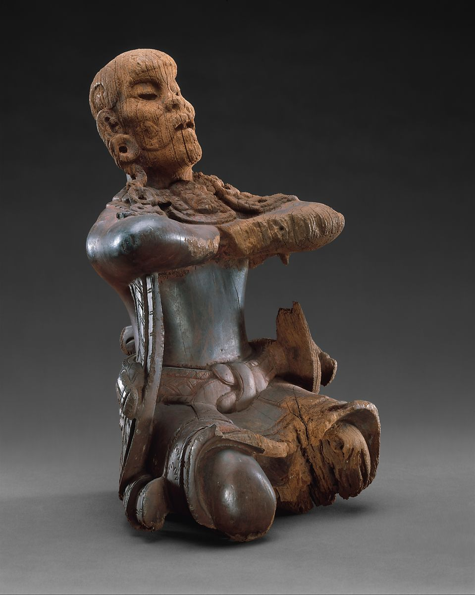
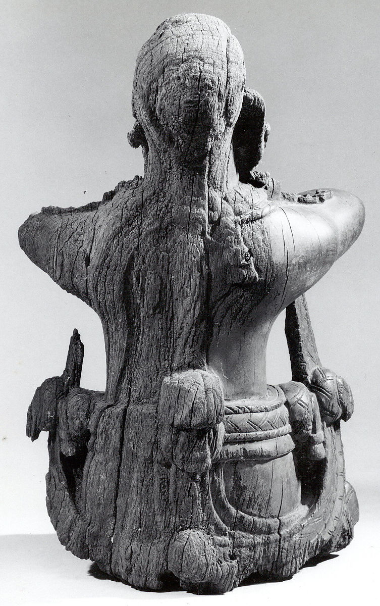
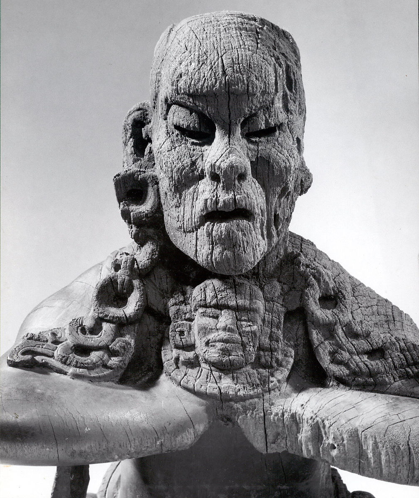
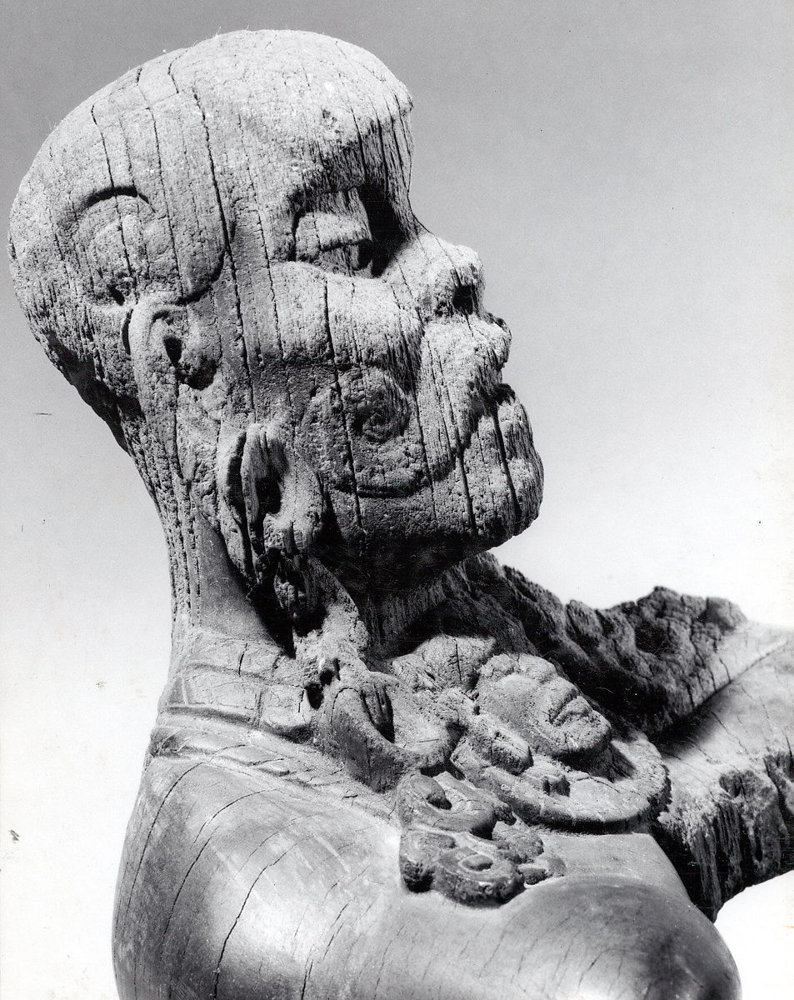

-

- 
- 
- 
- 
- 
Mirror-Bearer
6th century
This Mirror-Bearer figure is the best-preserved example of portable Maya wood sculpture and one of the highlights of the Early Classic period (ca. A.D. 250–550) Maya art. The artist created this figure out of a solid piece of hardwood from the genus Cordia, known locally as bocote. Research determined a radiocarbon age for the wood of 1425 years before present (± 120 years), or a range of A.D. 410 to 650. It was said to have come from the border region between Guatemala and Tabasco, Mexico. Most likely, to judge from its extraordinary preservation, the findspot must have been a dry cave or well-sealed funerary chamber. The damage on its left side is the result of some wear or decay in that context, perhaps from resting against a surface or being subjected to varying passage of air.
The person, a male, wears an elaborate knee-length woven skirt with ties that cover his navel. The waistband of the skirt shows a braided and fringed design with circular rosettes on the hips and at the spine. The hem of the skirt displays a jagged starburst-like pattern bordered above by a twisted braid and below by flaring fringe. The square knot at the figure’s stomach accentuates the realistic portrayal of the garment that sags between its slightly splayed knees. In addition, the Mirror-Bearer dons a shawl that goes around his neck and falls through his arms to connect to the rear rosette and is gathered in a bunch that sags away from the figure’s back.
Clearly defined notches in the skirt and under the arms would have held a removable plaque approximately 5 inches square, probably covered in a mosaic mirror of pyrite or obsidian. The plaque would have been inserted under the arms and then hooked into the skirt notches. In fact, the artist thinned the shawl under the figure’s right arm by chiseling. This enabled a better "fit" for the plaque, which, at a roughly 60-degree angle, matched the pitch of the figure’s face.
The Mirror-Bearer wears a distinct hairstyle or headdress and is shown with a curled moustache. The eye sockets are carved out, possibly to hold eye inlays of shell and obsidian. He arches his back, his head slightly tilted upward, his upper arms parallel to the ground, and his feet, which, though eroded, are folded under his body. He is shown holding his fists tightly to his chest, clutched under an elaborate pectoral. The pectoral ornament depicts an anthropomorphic portrait, with a headdress, ear flares, and a wide collar of jade beads. The elaborate multi-tiered ear ornaments of the figure consist of a flare through the stretched lobe, with two other jade discs hanging below it, terminating in a graceful portrait of a jawless reptilian creature. Such luxurious jade jewelry would have only been reserved for a high member of the elite. Surviving reddish iron oxide pigment on the surface indicates that he would have been brightly painted and vivid in effect.
Although the artist seems to have depicted this individual at a small scale but with normal bodily proportions at approximately 1/3 scale, he is most likely a royal court dwarf, as seen in many palace scenes. The unusual facial hair, bulbous forehead, and profile are consistent with Maya artists’ depictions of individuals with achondroplasia or other types of genetic dwarfism. In Maya art, dwarves represented a type of antithetical beauty in contrast to the graceful Maize God. They were also very special in the eyes of Mesoamerican societies; they had divinatory powers and were sought after as entertainers in royal courts.
The mirror-bearer to the ruler was an important role, sometimes filled by a woman, but more often by courtly dwarves. Their primary function was to reflect the image of Maya lords and ladies as those dignitaries preened in self-regard. Many of these mirror plaques have been found in Mexico and Central America, especially from the Classic Maya and Teotihuacan cultures. They are usually rectangular or circular ranging from 7 to 30 cm. in diameter. Mirrors are also known as objects for divination in Mesoamerica. The mirrors themselves were planes of luminous reflection, conceived as portals. The semi-permanence of a mirror held by a stone or wooden character implies that a mirror needed to be aimed at the ruler at all times when he was on the throne.
There may be a connection with the wooden Mirror-Bearer and K’awiil, the Maya god of lightning, who is closely associated with mirrors or highly polished stones in artistic representations. When excavators at Tikal, Guatemala encountered a tomb they labeled Burial 195, it was flooded with sediment, allowing them to detect voids in the mud. When injected with plaster, the voids revealed small wooden deity figures covered in blue-green stucco from which the wood had rotted away. These wooden K’awiils are seen as holding a square elements in front of them, much like the Mirror-Bearer.
Only two other wooden mirror-bearers are known. The first, in the Princeton University Art Museum (y1990-71), is of similar scale to the Met’s figure. The bearer is shown with standard bodily proportions but bears traces of an abnormal hairstyle and raised bump representations of scarification on the chin. Probably a youthful courtier, for young men also did much service to kings, he is adorned with a plain loincloth tied in the back and also exhibits vestiges of red pigment and stucco on the weathered surface.
The only archaeologically excavated example of a wooden mirror-bearer comes from the site of Becan, Campeche, Mexico. It was recovered from a disturbed funerary chamber within the elevated tiers of Structure IX, the largest pyramid at the site. Along with the wooden sculpture, excavators found a conch shell (Strombus sp.), a frame with mosaic tesserae of hematite, three obsidian blades and fifteen Early Classic ceramic vessels. The wood was also identified as of the genus Cordia, perhaps chosen for its sturdiness but light weight relative to denser woods. Carved from one piece, the bearer is a standing male dwarf, leaning forward with his chin slightly raised and his arms held bent at the side of his body, which was originally covered in red pigment.
There is other evidence that the Mirror-Bearer of the Metropolitan Museum would have been placed in the center of scenes of feasting, tribute, or other rituals. A wooden mirror-bearer may appear on a cylinder vessel in the National Gallery of Australia, Canberra (NGA 82.2292), originally made in the mid-8th century at the Ik’ kingdom of the area of Lake Petén Itza, Petén, Guatemala. The central figure is a portly king surrounded by his attendants, musicians, and even a hunchback and a dwarf drinking out of a large bowl. The key figure of this composition is the small dwarf holding the mirror: this is possibly an object of wood. It has a markedly differential color and scale that contrast with that of the nearby drinking dwarf, and resemble more closely that of the wooden mirror bearers from the Metropolitan. Though painted roughly two centuries after the creation of the Metropolitan’s Mirror-Bearer, this object appears in the company of other courtiers. Thus there was continuity through generations of portraying a wooden object in a group of humans as an equal participant in courtly life, gesturing and interacting with the king.
s